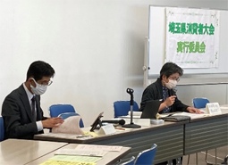
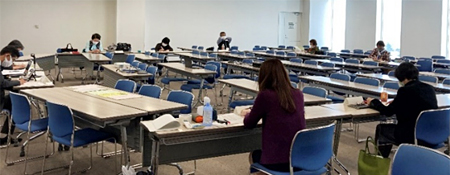

|
|
3月26日（金）10時30分より、浦和コミュニティセンター第15集会室にて、第1回実行委員会をオンライン併用で開催し、19人（14団体）が出席しました。 ＊オンライン出席5人 【議題】  1．事務局長あいさつ…コロナ禍の中、できることを見出しながら取り組みましょうとよびかけました。 2．埼玉県消費者大会について…文書を確認しました 3．第57回のすすめ方について （1）日程・会場について 会場については、実開催およびオンライン配信を想定し、11月9日に小ホールをメイン会場として、分散会会場として3会議室押さえていることを確認しました。 （2）運営体制について 第56回の申し送りを確認し、県域および地域団体からの副実行委員長については、事務局が調整すること、あわせて、正副の打ち合わせを実行委員会前の消団連幹事会で行うことを確認しました。 （3）参加団体集約状況…22団体から参加の連絡がきていることを報告しました。二つの地域団体の解散、高齢化による実行委員会への不参加団体について報告しました。 （4）分担金について…考え方を再確認し、提案・確認しました （5）第56回決算と第57回予算（案）について…確認しました。例年より大会会場費がかからない分、オンライン配信などの経費がかさむこと、実行委員会の会場費が一定かかることを報告しました。 （6）今後の実行委員会のすすめ方について…当面、オンライン併用で開催すること、意見用紙で意見を集約しながらすすめていくことを確認しました （7）大会開催イメージについて 記念講演の講師について、事務局案を報告し、「環境」「コロナ関連」「SDGs」「防災」「安心してくらせる地域社会づくり」などのテーマで講演を希望するとの意見が出されました。次回実行委員会まで、事務局が順次交渉することを確認しました。 （8）今後の実行委員会日程と会場について…確認しました  |